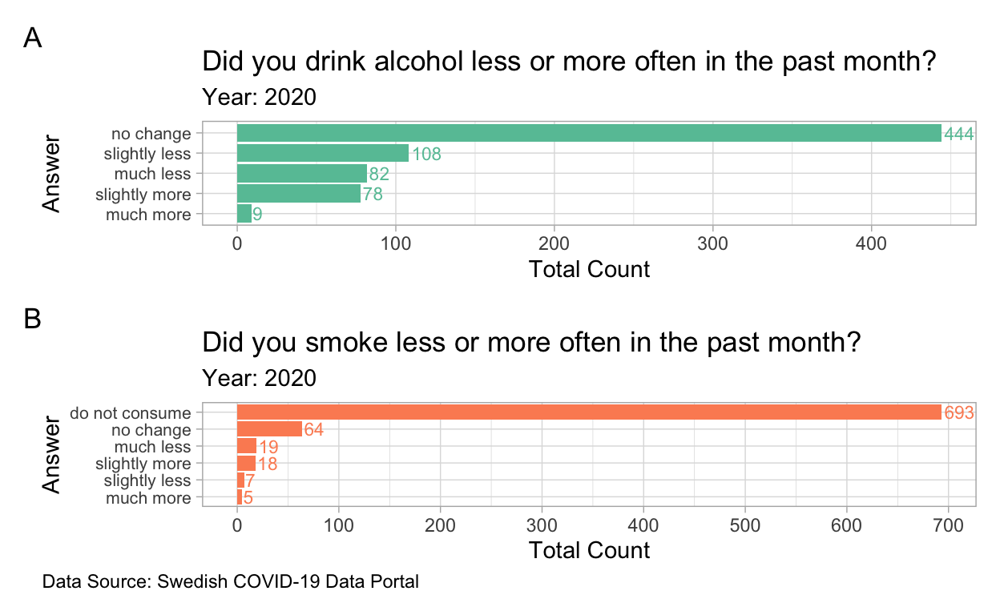

Introduction
In this post, we will continue to explore the COVID status in Europe, but in a different country, Sweden. Two key topics will be addressed.
Data Description 📄
COVID -19 Survey Data
This survey data is obtained from Swedish COVID-19 Data Portal, it is publicly accessible and under MIT license. It is a survey done by 40,060 people from 21 different European countries, all the entries were done between April to July in 2020 when COVID-19 hit Europe. There are 39 variables and 40064 observations, data dictionary and missing values are shown in Figure 1 and Figure 2.
Figure 1: COVID-19 Survey 2020, Europe
Figure 2: Summary of Missing Value in COVID-19 Survey Data
Vaccination Data
Dataset used in the post was sourced from European Centre for Disease Prevention and Control, it provides open source data for infectious diseases. This dataset contains vaccination data for 30 European countries, there are 12 variables and 84000 observations and all data are up to date, data dictionary is shown in Figure 3.
Figure 3: Data Dictionary
This post mainly focuses on analysing the data for Sweden, Figure 4 shows the number of missing values and their percentage in each variable in the sub-dataset of Sweden. Variable FirstDoseRefused and Denominator will not be used for the analysis and they can be omitted. As the number of vaccine doses distributed to the country were not on a weekly basis, therefore there are 94% of missing values.
Figure 4: Summary of Missing Value in Sub-dataset for Sweden
Data Exploration 🔍
COVID-19 Survey
Mental Health
Financial Status

Behaviour
Drinking & Smoking

Use of Cannabis & Illegal Drugs
Current Vaccination Status
Fully Vacinated Numbers

Reference
ECDC, European Centre for Disease Prevention and Control. (2021, September, 9). “Data on COVID-19 vaccination in the EU/EEA”, https://www.ecdc.europa.eu/en/publications-data/data-covid-19-vaccination-eu-eea